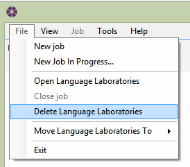

Deleting jobs |
It is possible to delete jobs in Contract Administrator. However for legal reasons, it is advised that only jobs which have been created in error are deleted. It is recommended that jobs that require keeping for reference are archived. Once a job has been deleted, it cannot be recovered.
To delete a job, either right-click on the job and select Delete or highlight the correct job and go to File > Delete <Job Name>.

Please Note: Once a job has been deleted, it is still necessary to delete all issued forms (PDF files) which have been created and saved in the Current Job Output Directory.
See Also:
Default Output Location
Current Job Output Directory
Archiving Jobs